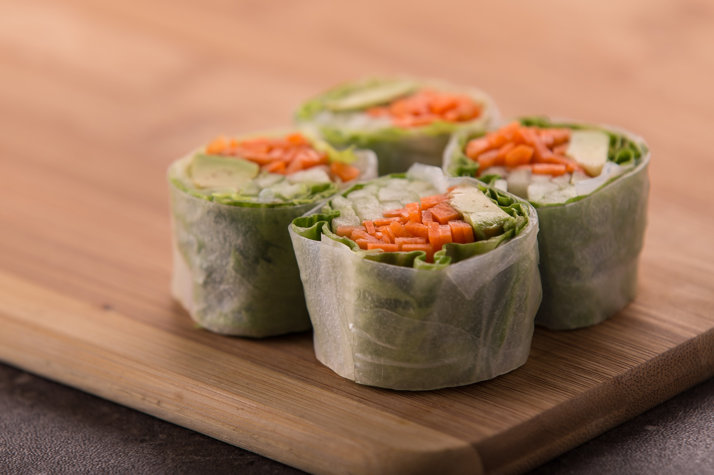

Twinkie Sushi

While chopsticks are still an option, we recommend avoiding soy sauce with this recipe.
"Sushi isn't always practical for school, so I sent my daughter in with Twinkie sushi instead. Great idea!"
-Mika G.
Ready in: 5 minutes
Serves: 2-3 people
Ingredients:
- 3 Hostess Twinkies
- assorted dried fruits
- assorted decorative candies
- 2 green fruit leather
- dried mango
Directions:
- Slice Twinkies into pieces about an inch tall.
- Slice fruit rollups in strips to be long enough and wide enough to wrap around the Twinkie pieces.
- Place dried fruits and candies into the cream filling.
- Place Twinkie rolls on a plate or in a Bento box.
- Garnish with strips of dried mango to resemble pickled ginger.